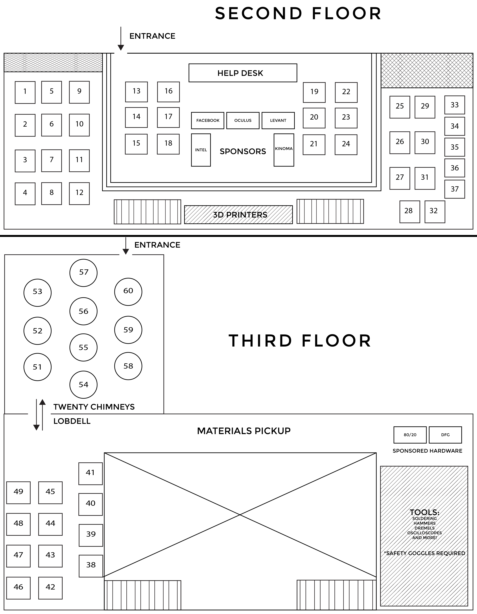

Below are a couple of maps you may find useful. whereis.mit.edu provides an interactive map of MIT's campus.
For shuttle schedules, download the MIT Mobile App from the App Store or Google Play Store.
whereis.mit.edu MIT Mobile App
Map of MakeMIT

Map of Kendall/MIT T Stop